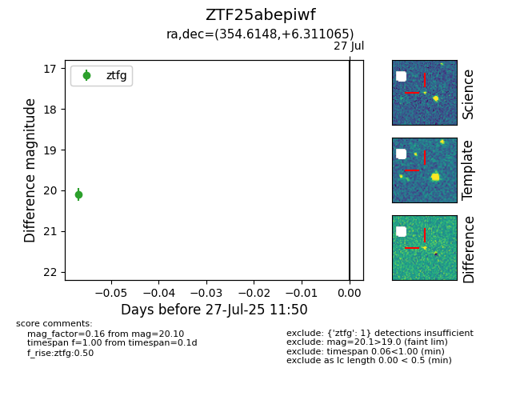

Target ZTF25abepiwf at 2025-07-27 11:50, see:
FINK: fink-portal.org/ZTF25abepiwf
Lasair: lasair-ztf.lsst.ac.uk/objects/ZTF25abepiwf
ALeRCE: alerce.online/object/ZTF25abepiwf
alt names
ZTF25abepiwf (ztf,fink)
coordinates:
equatorial (ra, dec) = (354.6148,+6.31107)
galactic (l, b) = (92.4316,-52.18549)
photometry
last ztfg=20.10
1 ztfg detections
